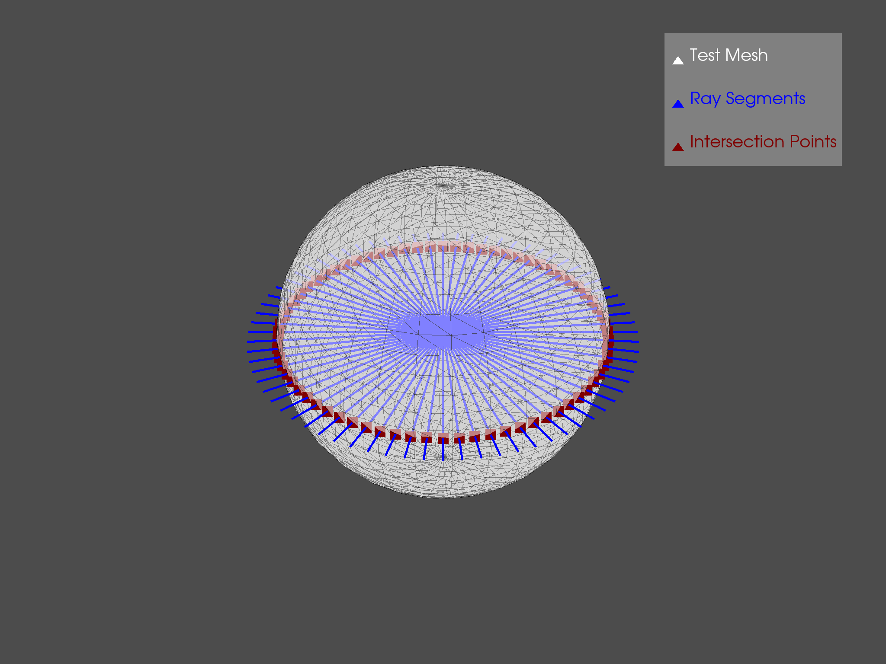
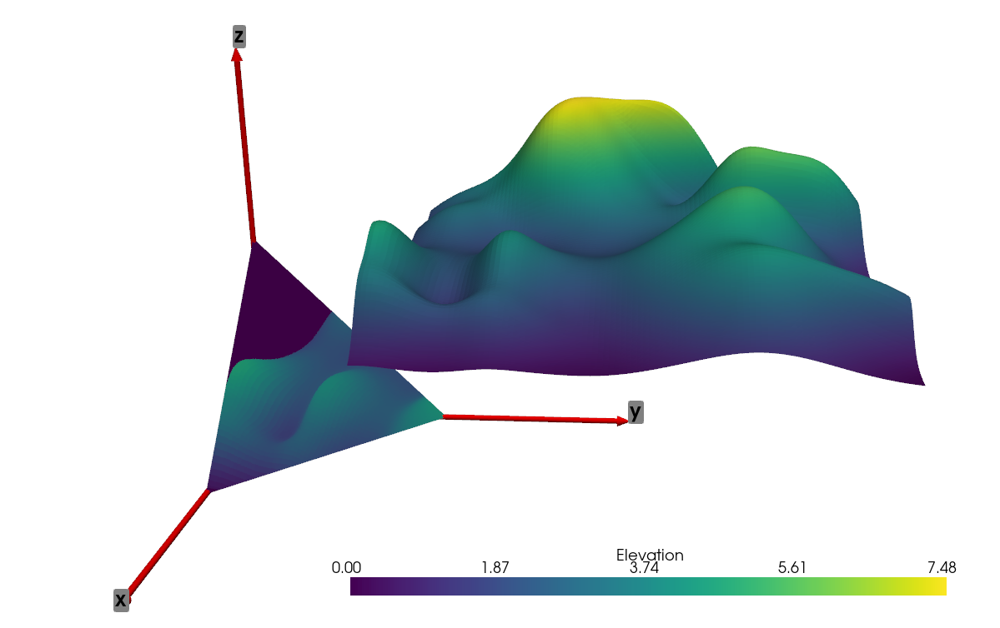

オプションの依存関係#
pyvista モジュールは numpy を使用しているため， matplotlib ， trimesh ， rtree ， pyembree などの他のモジュールとの相性が良いです．以下の例は，通常は VTK に含まれない高度な解析を実行するために，複数のモジュールを使用または結合する pyvista に含まれるオプション機能を示しています．
ベクトルレイトレーシング#
PolyDataオブジェクトを使用して多数のレイトレースを同時に実行します(オプションの依存関係trimesh，rtree，pyembreeが必要です)
from math import sin, cos, radians
import pyvista as pv
# Create source to ray trace
sphere = pv.Sphere(radius=0.85)
# Define a list of origin points and a list of direction vectors for each ray
vectors = [ [cos(radians(x)), sin(radians(x)), 0] for x in range(0, 360, 5)]
origins = [[0, 0, 0]] * len(vectors)
# Perform ray trace
points, ind_ray, ind_tri = sphere.multi_ray_trace(origins, vectors)
# Create geometry to represent ray trace
rays = [pv.Line(o, v) for o, v in zip(origins, vectors)]
intersections = pv.PolyData(points)
# Render the result
p = pv.Plotter()
p.add_mesh(sphere,
show_edges=True, opacity=0.5, color="w",
lighting=False, label="Test Mesh")
p.add_mesh(rays[0], color="blue", line_width=5, label="Ray Segments")
for ray in rays[1:]:
p.add_mesh(ray, color="blue", line_width=5)
p.add_mesh(intersections, color="maroon",
point_size=25, label="Intersection Points")
p.add_legend()
p.show()

有限平面への投影#
次の例では，ベクトル化されたレイトレーシングの例を発展させ，random_hillsの例のデータを三角形の平面に投影しています．
import numpy as np
from pykdtree.kdtree import KDTree
from tqdm import tqdm
import pyvista as pv
from pyvista import examples
# Load data
data = examples.load_random_hills()
data.translate((10, 10, 10), inplace=True)
# Create triangular plane (vertices [10, 0, 0], [0, 10, 0], [0, 0, 10])
size = 10
vertices = np.array([[size, 0, 0], [0, size, 0], [0, 0, size]])
face = np.array([3, 0, 1, 2])
planes = pv.PolyData(vertices, face)
# Subdivide plane so we have multiple points to project to
planes = planes.subdivide(8)
# Get origins and normals
origins = planes.cell_centers().points
normals = planes.compute_normals(cell_normals=True, point_normals=False)["Normals"]
# Vectorized Ray trace
points, pt_inds, cell_inds = data.multi_ray_trace(
origins, normals
) # Must have rtree, trimesh, and pyembree installed
# Filter based on distance threshold, if desired (mimics VTK ray_trace behavior)
# threshold = 10 # Some threshold distance
# distances = np.linalg.norm(origins[inds] - points, ord=2, axis=1)
# inds = inds[distances <= threshold]
tree = KDTree(data.points.astype(np.double))
_, data_inds = tree.query(points)
elevations = data.point_data["Elevation"][data_inds]
# Mask points on planes
planes.cell_data["Elevation"] = np.zeros(planes.n_cells)
planes.cell_data["Elevation"][pt_inds] = elevations
# Create axes
axis_length = 20
tip_length = 0.25 / axis_length * 3
tip_radius = 0.1 / axis_length * 3
shaft_radius = 0.05 / axis_length * 3
x_axis = pv.Arrow(
direction=(axis_length, 0, 0),
tip_length=tip_length,
tip_radius=tip_radius,
shaft_radius=shaft_radius,
scale="auto",
)
y_axis = pv.Arrow(
direction=(0, axis_length, 0),
tip_length=tip_length,
tip_radius=tip_radius,
shaft_radius=shaft_radius,
scale="auto",
)
z_axis = pv.Arrow(
direction=(0, 0, axis_length),
tip_length=tip_length,
tip_radius=tip_radius,
shaft_radius=shaft_radius,
scale="auto",
)
x_label = pv.PolyData([axis_length, 0, 0])
y_label = pv.PolyData([0, axis_length, 0])
z_label = pv.PolyData([0, 0, axis_length])
x_label.point_data["label"] = [
"x",
]
y_label.point_data["label"] = [
"y",
]
z_label.point_data["label"] = [
"z",
]
# Plot results
p = pv.Plotter()
p.add_mesh(x_axis, color="r")
p.add_point_labels(x_label, "label", show_points=False, font_size=24)
p.add_mesh(y_axis, color="r")
p.add_point_labels(y_label, "label", show_points=False, font_size=24)
p.add_mesh(z_axis, color="r")
p.add_point_labels(z_label, "label", show_points=False, font_size=24)
p.add_mesh(data)
p.add_mesh(planes)
p.show()
